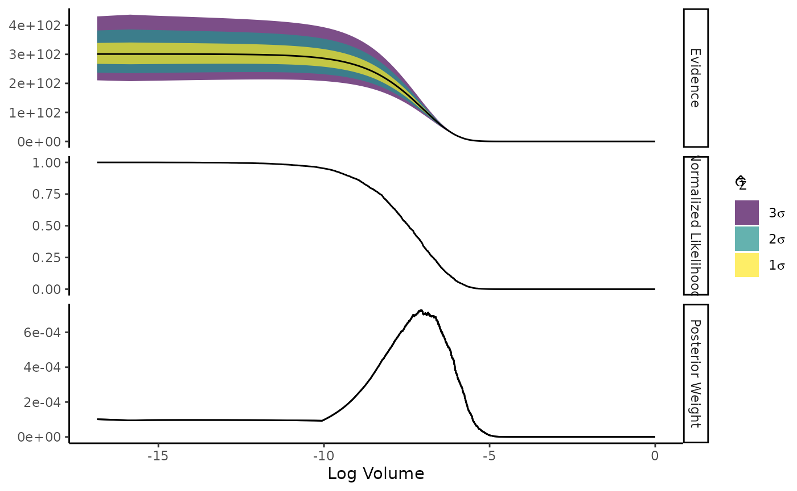

This vignette demonstrates how to use the ernest package to solve several classical nested sampling problems. These examples are based on standard benchmarks from the literature and are also used in the package’s test suite to validate correctness. You’ll learn how to specify likelihoods and priors, run nested sampling, and interpret the results.
1. Gaussian Shells
The “Gaussian shells” problem is a standard test for nested sampling algorithms, as they illustrate the ability of nested sampling to deal with oddly-shaped distributions that can be difficult to traverse with traditional random-walk MCMC methods.
We will solve the shells problem in 2 and 5 dimensions. To make this easier, we’ll build a function factory to specify the log-likelihood of two Gaussian shells in -dimensional space, with one shell offset in the first dimension by 3.5.
gaussian_shell <- function(n_dim) {
c_1 <- numeric(n_dim) # Center of shell 1
c_2 <- numeric(n_dim) # Center of shell 2
c_1[1] <- 3.5 # 1D of the first shell is off-center
r <- 2 # Radius
w <- 0.1 # Shell width
const <- log(1 / sqrt(2 * pi * w^2))
# Single-shell log-likelihood
log_lik_shell <- function(theta, c) {
d <- sqrt(sum((theta - c)^2))
const - (d - r)^2 / (2 * w^2)
}
# log-likelihood of two shells
function(theta) {
matrixStats::logSumExp(c(
log_lik_shell(theta, c_1),
log_lik_shell(theta, c_2)
))
}
}1.1. Shells in 2D
log_lik_2d <- gaussian_shell(2)
prior_2d <- create_uniform_prior(
n_dim = 2,
lower = -6,
upper = 6,
varnames = c("x", "y")
)
sampler_2d <- ernest_sampler(log_lik_2d, prior_2d)
run_2d <- generate(sampler_2d, show_progress = FALSE)
#> ✔ Creating new live points.
#> ✔ `min_logz` reached (0.0499 < 0.05).
run_2d
#> Nested sampling run <ernest_run/ernest_sampler>
#> No. Points: 500
#>
#> ── Sampling Method
#> • Random Walk in Unit Cube LRPS <rwmh_cube/ernest_lrps>
#> • No. Dimensions: 2
#> • No. Calls Since Update: 0
#> • No. Accepted Since Update: 0
#> • Current Step Size: 0.0146
#>
#> ── Results
#> No. Iterations: 3439
#> No. Calls: 72103
#> Log. Evidence: -1.7871 (± 0.0864)We can review the results with more detail using
summary():
summary(run_2d)
#>
#> ── Nested sampling results <ernest_run> ────────────────────────────────────────
#> No. Points: 500
#> No. Iterations: 3439
#> No. Lik. Calls: 72103
#> Log. Evidence: -1.7871 (± 0.0864)1.2. Shells in 5D
log_lik_5d <- gaussian_shell(5)
prior_5d <- create_uniform_prior(
n_dim = 5,
lower = -6,
upper = 6,
varnames = LETTERS[1:5]
)
sampler_5d <- ernest_sampler(log_lik_5d, prior_5d)
run_5d <- generate(sampler_5d, show_progress = FALSE)
#> ✔ Creating new live points.
#> ✔ `min_logz` reached (0.0499 < 0.05).
run_5d
#> Nested sampling run <ernest_run/ernest_sampler>
#> No. Points: 500
#>
#> ── Sampling Method
#> • Random Walk in Unit Cube LRPS <rwmh_cube/ernest_lrps>
#> • No. Dimensions: 5
#> • No. Calls Since Update: 0
#> • No. Accepted Since Update: 0
#> • Current Step Size: 0.001
#>
#> ── Results
#> No. Iterations: 5374
#> No. Calls: 120077
#> Log. Evidence: -5.6695 (± 0.1295)If we wanted to ensure ourselves that our prior was behaving as
expected, we can use the posterior package to examine our
recorded samples.
library(posterior)
#> This is posterior version 1.6.1
#>
#> Attaching package: 'posterior'
#> The following objects are masked from 'package:stats':
#>
#> mad, sd, var
#> The following objects are masked from 'package:base':
#>
#> %in%, match
draws_5d <- as_draws(run_5d)
range(extract_variable(draws_5d, "A"))
#> [1] -5.959388 5.988438
range(extract_variable(draws_5d, "B"))
#> [1] -5.997989 5.9368392. The Eggbox distribution
The eggbox is a highly multimodal likelihood surface, used as another classical example in nested sampling.
eggbox_loglik <- function(theta) {
(2 + cos(theta[1] / 2) * cos(theta[2] / 2))^5
}
prior_eggbox <- create_uniform_prior(n_dim = 2, upper = 10 * pi)
#> New names:
#> • `Uniform` -> `Uniform...1`
#> • `Uniform` -> `Uniform...2`
sampler_eggbox <- ernest_sampler(eggbox_loglik, prior_eggbox)
run_eggbox <- generate(sampler_eggbox, show_progress = FALSE)
#> ✔ Creating new live points.
#> ✔ `min_logz` reached (0.0499 < 0.05).
summary(run_eggbox)
#>
#> ── Nested sampling results <ernest_run> ────────────────────────────────────────
#> No. Points: 500
#> No. Iterations: 5029
#> No. Lik. Calls: 111555
#> Log. Evidence: 235.966 (± 0.1193)We can plot the run to examine how our evidence estimates changed over time:
plot(run_eggbox)
Additionally, we can use calculate to simulate
uncertainty around our log-volume estimates. As a shortcut, we can use
plot with a non-zero ndraws argument.
plot(run_eggbox, ndraws = 100)
3. Working with Data
To use data within an ernest run, you’ll have to incorporate it
within your log-likelihood function. In many cases, this can be done
through using an anonymous function: If f is a function
that takes in parameters theta and data y,
then you can pass data through to ernest by using the syntax
\(theta) f(theta, y).
As a demonstration, consider how ernest performs posterior estimation for this dataset from the National Institutte of Science and Technology.
# NIST dataset
data <- c(
100000000.2, 100000000.1, 100000000.3, 100000000.1, 100000000.3,
100000000.1, 100000000.3, 100000000.1, 100000000.3, 100000000.1, 100000000.3
)
log_lik_norm <- function(theta, y) {
sum(dnorm(y, theta[1], theta[2], log = TRUE))
}
prior_norm <- create_normal_prior(
n_dim = 2,
mean = c(100000000, 0.1),
sd = 10,
lower = c(-Inf, 0),
varnames = c("mean", "sd")
)
sampler_norm <- ernest_sampler(
log_lik = \(theta) log_lik_norm(theta, y = data),
prior_norm
)
run_norm <- generate(sampler_norm, show_progress = FALSE)
#> ✔ Creating new live points.
#> ✔ `min_logz` reached (0.05 < 0.05).
run_norm
#> Nested sampling run <ernest_run/ernest_sampler>
#> No. Points: 500
#>
#> ── Sampling Method
#> • Random Walk in Unit Cube LRPS <rwmh_cube/ernest_lrps>
#> • No. Dimensions: 2
#> • No. Calls Since Update: 0
#> • No. Accepted Since Update: 0
#> • Current Step Size: 5e-04
#>
#> ── Results
#> No. Iterations: 7023
#> No. Calls: 161301
#> Log. Evidence: -0.7788 (± 0.1605)To examine the posterior, we need to first call
posterior::resample_draws() on the draws
arugment produced from an ernest_run. This is because
ernest binds the log-importance posterior weights to the
as_draws object as a hidden variable.
Once this is done, we can use the posterior package to
examine the posterior distribution
draws_norm <- as_draws(run_norm) |> resample_draws()
summarize_draws(draws_norm)
#> # A tibble: 2 × 10
#> variable mean median sd mad q5 q95 rhat ess_bulk ess_tail
#> <chr> <dbl> <dbl> <dbl> <dbl> <dbl> <dbl> <dbl> <dbl> <dbl>
#> 1 mean 1.00e+8 1.00e+8 0.0359 0.0325 1.00e+8 1.00e+8 1.37 2286. 12.6
#> 2 sd 1.15e-1 1.09e-1 0.0312 0.0254 7.63e-2 1.70e-1 1.26 4.48 10.9